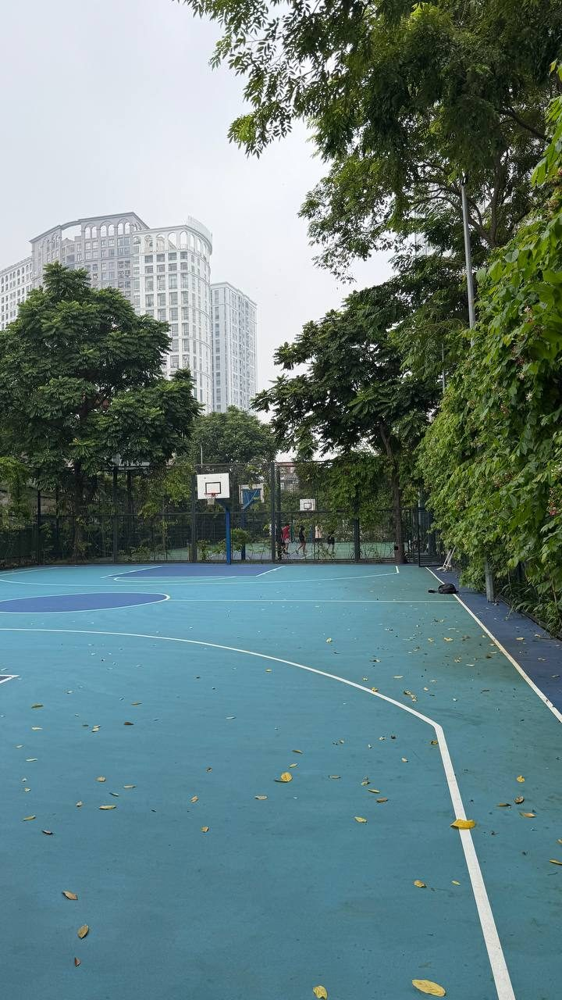
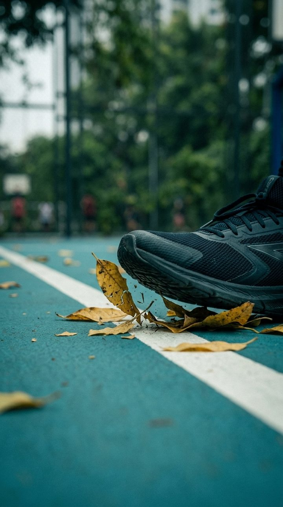
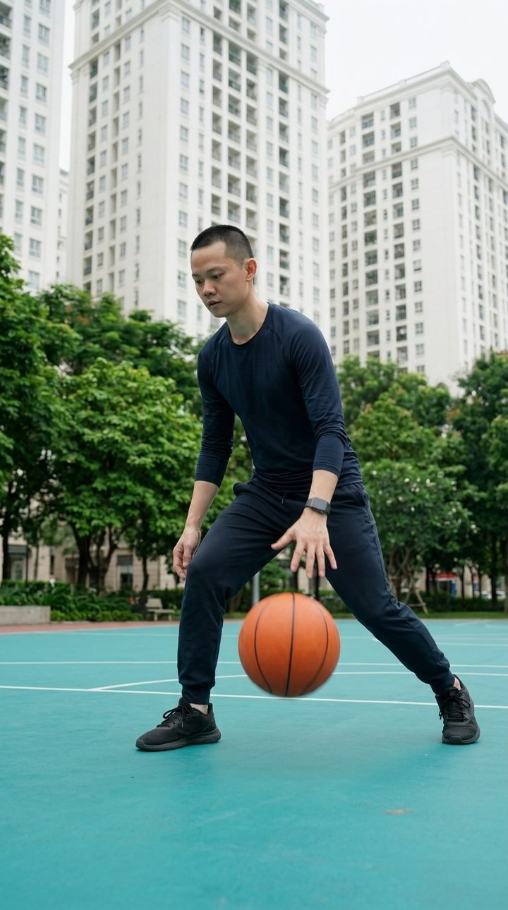
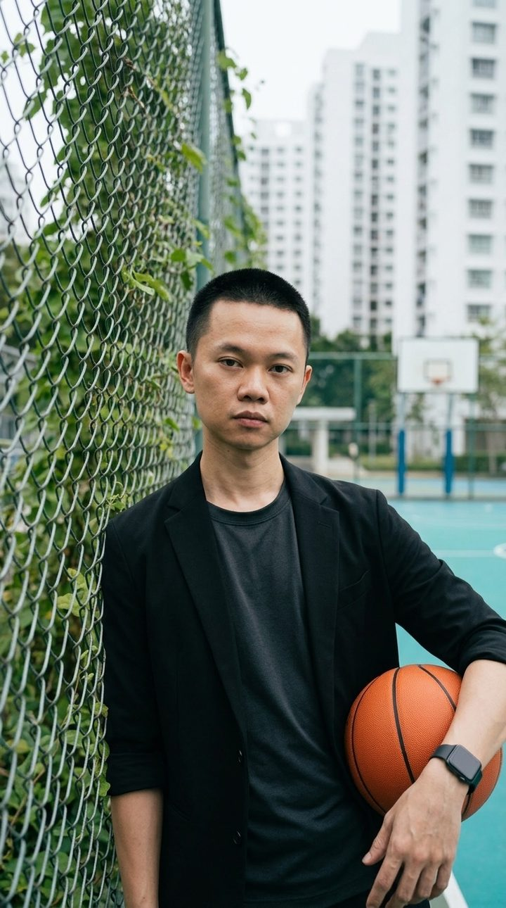
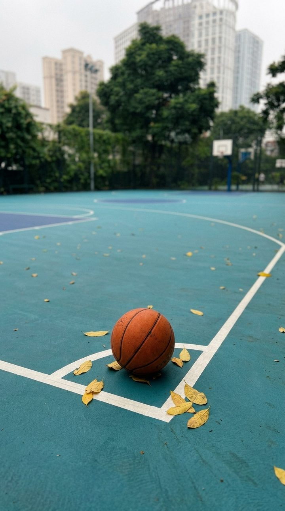
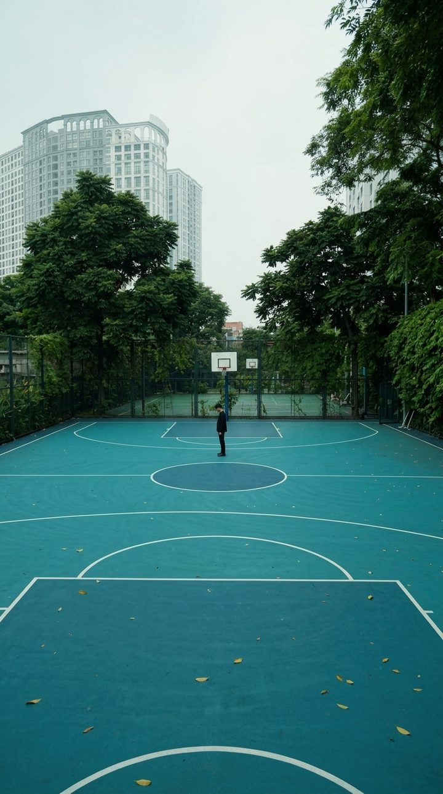

LOC_008 + LOC_087
Sân Thể Thao Times City • Sân Bóng Rổ & Tennis Ngoài Trời
Nhóm: TimesCity_Outdoor · Mặt sân acrylic xanh ngọc, rào lưới thép bám dây leo, cao ốc trắng tân cổ điển
⚠️ Archetype thiếu:





[LOCATION_GROUP]_[ARCHETYPE]_[SIZE]_[SEQ].mp4TimesCity_Outdoor_Cutaway_CU_001.mp4TimesCity_Outdoor_POV_POV_002.mp4TimesCity_Outdoor_Sequence_MS_003.mp4TimesCity_Outdoor_InSitu_MCU_004.mp4TimesCity_Outdoor_Metaphor_CU_005.mp4TimesCity_Outdoor_NegativeSpace_EWS_006.mp4💡 Tap vào tên file để copy nhanh